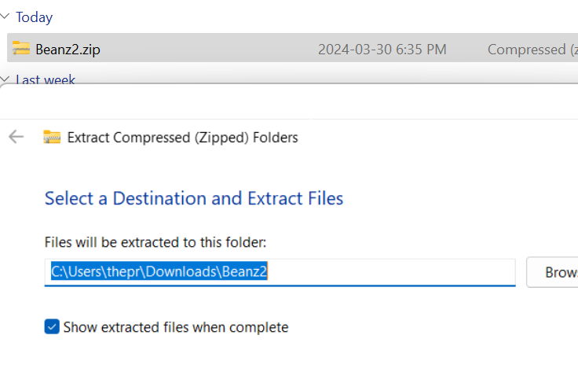
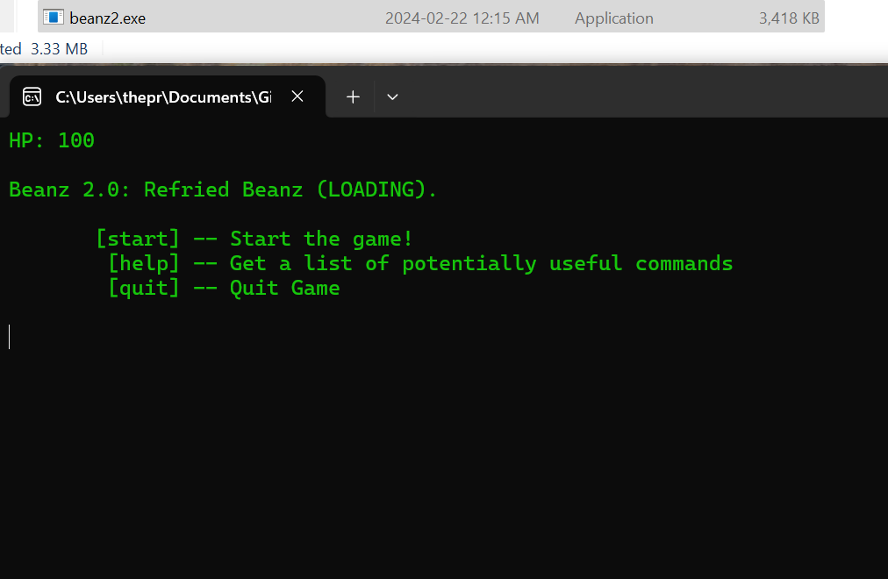

Beanz 2 Refried Beanz
A Text Adventure Game

Step 1
Go to This Website and choose which version you want by clicking on the title, and download beanz2.zip. And locate the file in your downloads folder.

Version 2
Once you have located the file right click on the file and hit extract all (if you are on windows 10 it will just say extract) then open the non zipped file

Version 1
Go into the bin folder and start beanz2.exe by double clicking on it. On some computers you have to move the file out of the bin file, and put it directly into the beanz2 file. You should now be playing beanz2!